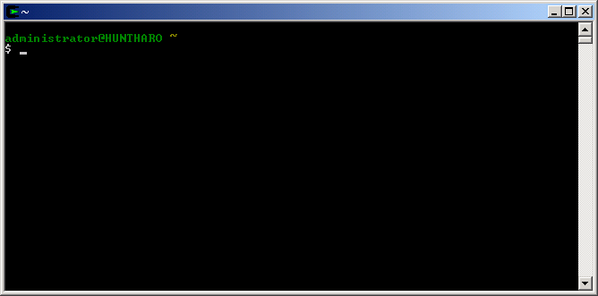
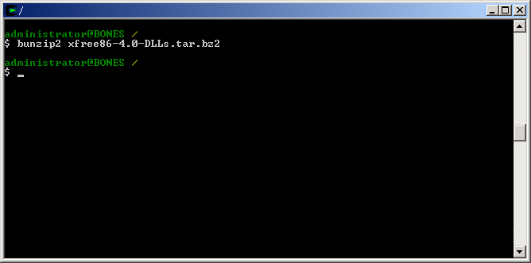

Cygwin/XFree86 binaries are installed by uncompressing and extracting the Cygwin/XFree86 files into the appropriate directory. Cygwin mounts your Cygwin installation directory as the root directory, /, and creates a typical POSIX file system below that directory (e.g. /usr, /bin, /home, /etc). Cygwin/XFree86 binaries need to end up in /usr/X11R6.
Tip: You may have noticed that you can run many of the programs included with Cygwin from a typical DOS prompt, and these programs seem to function normally (e.g. tar, bunzip2, gcc). However, I strongly recommend running the programs included with Cygwin from the bash shell included with Cygwin, as Cygwin simulates UNIX symlinks on Win32; bash integrates with the symlink simulation, but the DOS prompt does not understand Cygwin's symlink simulation; so while bash might show you a directory listing full of files, DOS will sometimes show you an empty directory listing (e.g. /usr/bin).
Follow these steps to install Cygwin/XFree86 binaries:
Launch your Cygwin environment, using either the icon on your Desktop, the icon in your Start Menu, or by running cygwin.bat from your Cygwin directory (e.g. c:\cygwin); you should see a window like the following:

Change to your root directory by typing cd /, followed by a hard return
Decompress each of the bzipped files, substituting each filename for the example filename, bunzip2 xfree86-4.0.3-DLLs.tar.bz2:

bunzip2 will remove the .bz2 extension from each file, leaving you with the uncompressed archive files ending with .tar
Unarchive each of the tar files from the root directory, substituting each filename for the example filename, tar -xf xfree86-4.0.3-DLLs.tar:
Installation of Cygwin/XFree86 binaries is now complete